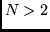
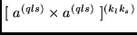

Next: The subroutine AWP1LS
Up: SAI_SQLS1
Previous: The subroutine RWLS
The subroutine W1
This subroutine determines the value of the matrix element:
![\begin{displaymath}
( l^{N} QLS \vert\vert [a^{(qls)}_{m_{q1}} \times a^{(qls)}_{m_{q2}}]^{(k_{l}k_{s})} \vert\vert l^{N'} Q'L'S' ).
\end{displaymath}](img384.png) |
(36) |
While calculating cases where the orbital number
l=0, 1, 2, 3 and the shell
occupation number , the program relies on the expression
(31) from the paper P1 [3]. In that case,
the subroutine finds the Clebsch-Gordan coefficient which gives the
dependence
on the shell occupation number. If the tensor product (36) consists
of either two electron creation or two annihilation operators then C1E1SM is
called. Otherwise CLE0SM is called. The subroutine RWLS finds the reduced matrix
elements of the operator
.
In other cases, the program calculates according to the expression (40)
from paper P2 [4].
The subroutine has the formal arguments:
- IK is the array I for the bra function.
- BK is the array B for the bra function.
- ID is the array I for the ket function.
- BD is the array B for the ket function.
- K2 is the rank
 .
.
- K3 is the rank
 .
.
- QM1, QM2 are the quasispin projections in (36).
- W is the value of the reduced matrix element (36) which is returned by the subroutine.
Next: The subroutine AWP1LS
Up: SAI_SQLS1
Previous: The subroutine RWLS
2001-12-07